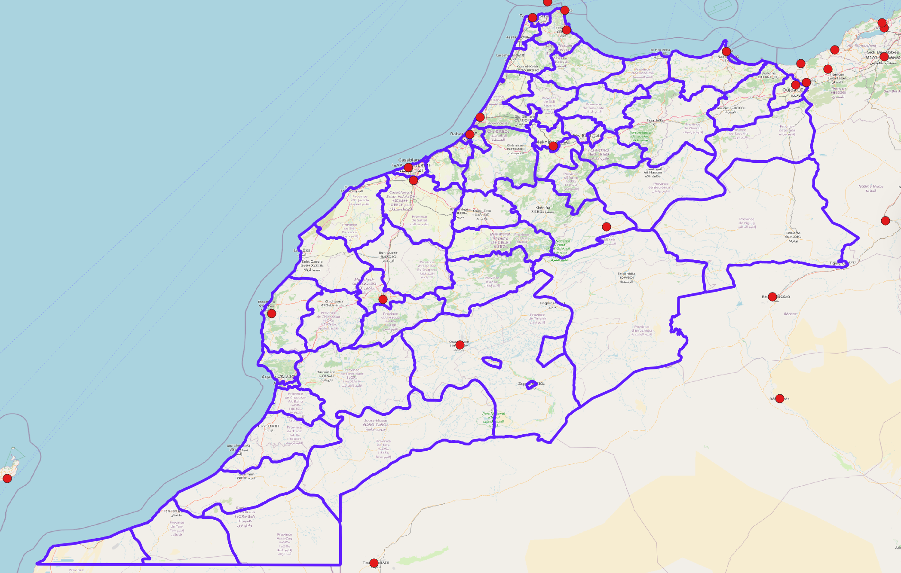
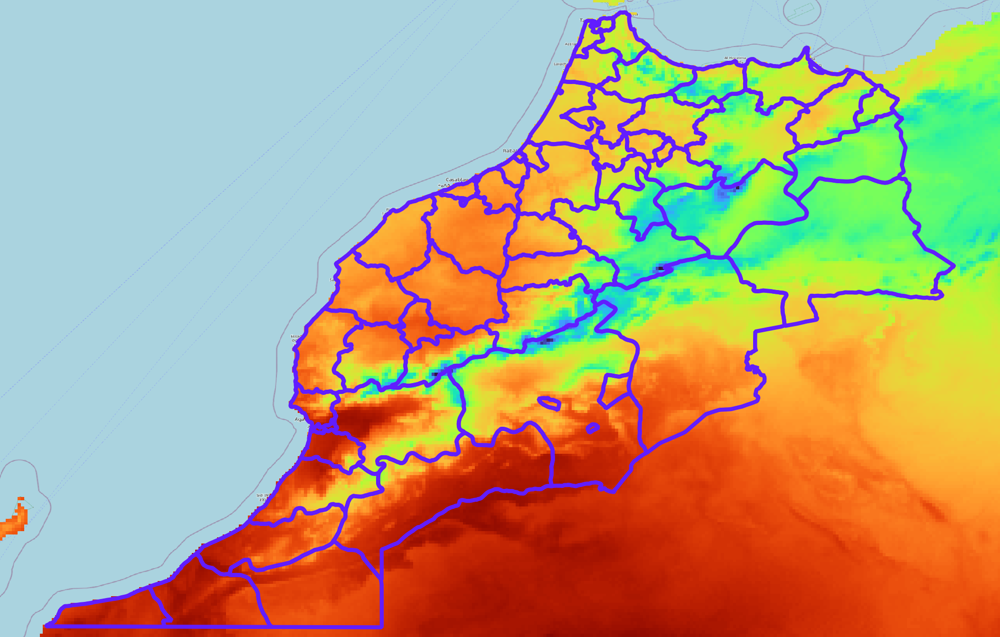
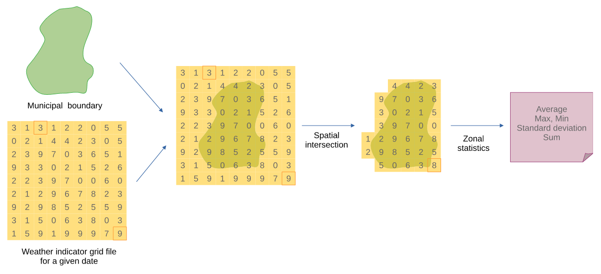

flowchart LR A[Dados originais] --> B[Escala espacial original] A --> C[Escala temporal original] B --> D[Regra de harmonização] C --> D D --> E[Indicador harmonizado] E --> F[Análise integrada]
3 Harmonização de indicadores
Estudos em Saúde Pública demandam uma grande quantidade de indicadores, provenientes de diversas áreas, para melhor refletir a realidade estudada, incluindo diversos aspectos contextuais sobre o processo saúde, doença e cuidado.
A diversidade de indicadores introduz um desafio extra: a necessidade de compatibilizar os indicadores de modo a permitir a sua observação e comparação simultânea.
Indicadores de saúde costumam ser agregados e divulgados por unidades administrativas ou sanitárias, como taxas de incidência de doenças por bairros, municípios ou regiões de saúde (dimensão espacial) e por dias, semanas epidemiológicas ou meses (dimensão temporal). Indicadores sociodemográficos seguem estruturas semelhantes.
Já indicadores ambientais e climáticos, como temperatura e precipitação, podem ser coletados em localizações específicas, como estações meteorológicas, constituindo observações dos fenômenos climáticos em um ponto no espaço, ou obtidos por sensores remotos, reanálises e outros produtos em grade, apresentando uma superfície espacial de observações. Assim, para incluir indicadores de saúde, sociais, ambientais e climáticos em uma mesma análise, é necessário realizar um procedimento para a compatibilização das escalas espaciais e temporais dos indicadores.
3.1 Conceito
Entende-se aqui que a “harmonização de indicadores” é o processo de tornar diferentes indicadores compatíveis entre si, considerando suas unidades espaciais, unidades temporais, métodos de cálculo e formas de mensuração. O objetivo é permitir que indicadores provenientes de diferentes fontes possam ser analisados conjuntamente de forma coerente.
A harmonização não é apenas uma etapa técnica. Ela influencia diretamente a interpretação dos resultados, pois altera a unidade de observação, a escala temporal, a forma de agregação e, em alguns casos, o próprio significado substantivo do indicador. Um indicador de precipitação diária, por exemplo, pode representar intensidade de chuva quando observado por dia, mas passa a representar volume acumulado quando agregado por mês. Do mesmo modo, uma taxa municipal pode expressar uma situação média do município, mas esconder desigualdades importantes entre bairros ou setores censitários.
Por isso, a harmonização deve ser compreendida como uma decisão metodológica. Ela precisa estar alinhada à pergunta de pesquisa, ao fenômeno observado e à escala em que uma ação de vigilância, planejamento ou política pública pode ser executada.
3.2 Operacionalização
A operacionalização da harmonização de indicadores se dá por meio do recálculo ou da reagregação dos indicadores para novas escalas espaciais e temporais, estabelecidas a priori considerando as necessidades do estudo. Ou seja, deve-se primeiro definir quais escalas temporal e espacial são adequadas para a pergunta de pesquisa ou de vigilância e, em seguida, realizar os procedimentos de harmonização de acordo com as escalas definidas.
Neste processo, indicadores de contagem podem ser somados ou divididos, mas indicadores como taxas e proporções devem ser recalculados.
Cuidado
No caso de indicadores de taxas e proporções, não se deve aplicar estatísticas resumo, como média, mediana ou desvio padrão, para obter o valor para a nova escala de análise quando os numeradores e denominadores estão disponíveis. O indicador deve ser recalculado para a nova escala, considerando os novos valores de numerador e denominador adequados.
Importante
Ao harmonizar taxas e proporções, some os numeradores e denominadores e recalcule o indicador na nova escala. Não use a média simples de taxas ou proporções de unidades menores para obter o valor de uma unidade maior.
Por exemplo, considere dois municípios:
| Município | Casos | População | Taxa por 1.000 habitantes |
|---|---|---|---|
| A | 10 | 1.000 | 10,0 |
| B | 100 | 100.000 | 1,0 |
A média simples das taxas municipais seria:
\[ \frac{10,0 + 1,0}{2} = 5,5 \]
Contudo, a taxa regional correta deve ser recalculada a partir da soma dos casos e da população:
\[ \frac{10 + 100}{1.000 + 100.000} \times 1.000 = 1,09 \]
Neste exemplo, a média simples superestima a taxa regional porque atribui o mesmo peso a um município pequeno e a um município muito maior.
Um fluxo prático para harmonização de indicadores pode seguir as seguintes etapas:
- Definir a pergunta analítica ou de vigilância.
- Definir a unidade espacial de análise, como município, bairro, setor censitário ou região de saúde.
- Definir a unidade temporal de análise, como dia, semana epidemiológica, mês ou ano.
- Identificar o tipo de cada indicador: contagem, proporção, taxa, razão, medida escalar, volume ou superfície espacial.
- Escolher a regra de harmonização adequada para cada indicador.
- Documentar as decisões metodológicas adotadas, incluindo perdas de informação, imputações e limitações.
Por exemplo, um estudo sobre dengue pode combinar casos notificados diariamente por município com precipitação mensal estimada em uma grade espacial. Se a análise for definida na escala município-mês, os casos diários devem ser somados por município e mês, enquanto a precipitação em grade deve ser harmonizada para os limites municipais e para o mesmo período mensal.
A tabela abaixo sintetiza regras gerais para a harmonização de diferentes tipos de indicadores.
| Tipo de indicador | Exemplos | Regra comum de harmonização | Cuidado principal |
|---|---|---|---|
| Contagem | Casos, óbitos, internações | Soma para unidades maiores de tempo ou espaço | Verificar duplicidades e mudanças de residência, ocorrência ou notificação |
| Proporção | Percentual de população idosa, proporção de domicílios com saneamento | Recalcular usando numerador e denominador agregados | Evitar média simples de proporções |
| Taxa | Incidência, mortalidade, natalidade | Recalcular usando eventos e população de referência | Preservar o denominador adequado para o período e a população sob risco |
| Razão | Razão de sexos, razão de dependência | Recalcular usando os componentes agregados | Garantir que os grupos comparados sejam compatíveis |
| Medida escalar | Temperatura, umidade relativa, velocidade do vento | Média, mediana, mínimo ou máximo, conforme o objetivo | A estatística escolhida altera a interpretação do indicador |
| Volume ou acumulado | Precipitação, emissões, produção | Soma no tempo ou no espaço, quando apropriado | Diferenciar intensidade, média e volume acumulado |
| Índice padronizado | SPI, PDSI, NDVI, índices sintéticos | Geralmente média ou estatística zonal, conforme a escala | Verificar se o índice pode ser agregado sem perder significado |
3.2.1 Dimensão temporal
A harmonização de indicadores na dimensão temporal se dá por meio da agregação ou desagregação do indicador para uma nova unidade de tempo. Esta agregação ou desagregação pode envolver a simples soma de valores, no caso de indicadores de contagem, ou o recálculo do indicador considerando a nova escala temporal.
Por exemplo, se o indicador de saúde é uma contagem de casos por dia e se tem por objetivo da harmonização apresentar este indicador por semana epidemiológica, o procedimento será realizar a soma da quantidade de casos que ocorrem em uma mesma semana epidemiológica.
Contudo, se o indicador for uma taxa, ele deve ser recalculado considerando a contagem para a nova escala e o valor do denominador apropriado.
A escolha da unidade temporal deve considerar o processo que está sendo analisado. Eventos agudos, como atendimentos por calor extremo, podem exigir dados diários ou semanais. Indicadores relacionados a condições estruturais, como saneamento ou renda, costumam variar lentamente e podem ser analisados em escala anual ou censitária. Doenças transmitidas por vetores podem exigir uma escala intermediária, como semana epidemiológica ou mês, especialmente quando há defasagem entre exposição ambiental e ocorrência do agravo.
Nota
Em análises de clima e saúde, é comum que a exposição ambiental relevante ocorra antes do desfecho em saúde. Temperatura, precipitação ou umidade observadas em semanas anteriores podem afetar a incidência futura de arboviroses, doenças respiratórias ou agravos relacionados ao calor. Assim, além da harmonização temporal, pode ser necessário construir defasagens temporais (lags) coerentes com o mecanismo estudado.
Quando a análise envolve desagregação temporal, o cuidado deve ser ainda maior. Transformar uma informação anual em valores mensais, por exemplo, pode exigir pressupostos fortes sobre a distribuição do fenômeno no tempo. Em muitos casos, é preferível reconhecer que o indicador só está disponível em uma escala mais agregada do que criar uma série temporal artificialmente detalhada.
3.2.2 Dimensão espacial
A harmonização de indicadores na escala espacial deve considerar se o indicador é apresentado por pontos, por agregados em região administrativa, ou uma superfície espacial.
A escolha da unidade espacial também deve levar em conta o fenômeno analisado. Municípios podem ser adequados para análises nacionais ou estaduais, mas podem ser pouco informativos para grandes centros urbanos, onde desigualdades intraurbanas são relevantes. Setores censitários, bairros ou áreas de abrangência de serviços de saúde podem ser mais adequados para análises locais, desde que os dados estejam disponíveis e sejam suficientemente estáveis.
Cuidado
Resultados de análises espaciais podem mudar quando a mesma informação é agregada em unidades territoriais diferentes. Esse problema é conhecido como problema da unidade de área modificável (modifiable areal unit problem, MAUP) (OPENSHAW, 1984). Por isso, comparações entre estudos ou mapas devem considerar a escala e a delimitação territorial utilizadas.
3.2.2.1 Pontos no espaço
Caso os valores do indicador sejam apresentados como pontos no espaço, como medidas de temperatura por estação meteorológica, os valores do indicador para cada ponto de mensuração devem ser associados ou agregados à nova unidade espacial pretendida, como municípios ou regiões administrativas.

A figura acima apresenta algumas estações meteorológicas localizadas no Marrocos e uma subdivisão administrativa do território. Em regiões com apenas uma estação, o valor desta estação pode ser aplicado para toda a região. Em regiões com mais de uma estação, os valores das estações podem ser agregados e aplicados para a região. Regiões sem estações ficam sem valor para o indicador, a menos que sejam utilizados métodos de preenchimento ou interpolação espacial.
Nota
Indicadores escalares como temperatura e umidade relativa do ar podem ser harmonizados utilizando-se a média estatística. Já na harmonização de indicadores de volume, como precipitação, costuma-se utilizar a soma.
Outras estratégias podem ser empregadas quando a cobertura de estações é insuficiente, como o uso da estação mais próxima, ponderação pela distância, interpolação espacial, krigagem ou produtos em grade baseados em sensoriamento remoto e reanálises climáticas. A escolha do método deve considerar a densidade da rede de observação, a variabilidade espacial do fenômeno e a escala de análise.
3.2.2.2 Regiões administrativas
Indicadores apresentados por regiões administrativas podem ser reagregados para outras regiões administrativas caso exista uma hierarquia espacial compatível entre essas escalas. Por exemplo: municípios, microrregiões, macrorregiões, unidades federativas e grandes regiões. Neste caso, uma unidade espacial não pode estar contida em mais de uma outra unidade espacial de nível superior. Por exemplo, um município não pode pertencer a duas ou mais UFs.
Quando existe hierarquia territorial, contagens podem ser somadas diretamente. Taxas, proporções e razões devem ser recalculadas a partir de seus componentes. Por exemplo, para obter uma taxa estadual de mortalidade a partir de dados municipais, deve-se somar os óbitos dos municípios, somar ou estimar a população de referência correspondente e então calcular a taxa estadual. A média simples das taxas municipais daria o mesmo peso a municípios pequenos e grandes, produzindo uma medida potencialmente distorcida.
Nem toda mudança de escala espacial é hierárquica. A conversão entre bairros, setores censitários, áreas de abrangência de equipes de saúde e regiões administrativas pode envolver unidades que se sobrepõem parcialmente. Nesses casos, pode ser necessário usar métodos de redistribuição espacial, ponderação por área, ponderação por população ou outras técnicas de interpolação areal. A escolha do método deve ser explicitada, pois pode afetar os resultados.
3.2.2.3 Superfície espacial
A harmonização de um indicador que é apresentado como uma superfície espacial é um caso especial, onde é possível a aplicação de estatísticas resumo, como média, mediana e desvio-padrão.
Neste caso de harmonização de indicadores, o indicador de superfície espacial deve ser, primeiramente, sobreposto espacialmente à malha dos limites administrativos, como apresentado na figura abaixo.

Com esta sobreposição, observa-se quais pixels da superfície intersectam ou se sobrepõem a um elemento da malha. Considerando o conjunto de valores destes pixels para cada elemento da malha, é aplicada uma estatística resumo, como a média. Este procedimento é denominado “estatística zonal” em programas de geoprocessamento e Sistemas de Informação Geográfica (SIGs).

Em estatísticas zonais, a escolha da estatística resumo deve refletir o objetivo analítico. A média pode ser adequada para representar a exposição média de uma população ou território, enquanto o máximo pode ser mais relevante para detectar eventos extremos. O mínimo, a amplitude, o desvio-padrão ou percentis podem ser úteis para caracterizar heterogeneidade interna, especialmente em municípios extensos ou ambientalmente diversos.
Também é importante considerar se a estatística deve ser ponderada. Em alguns estudos, a média simples dos pixels de uma variável ambiental dentro do município é suficiente. Em outros, pode ser mais adequado ponderar os valores pela distribuição da população, dando maior peso às áreas onde as pessoas efetivamente residem.
3.3 Qualidade, incerteza e documentação
Todo procedimento de harmonização pode introduzir incertezas. Parte dessas incertezas decorre dos próprios dados originais, como subnotificação, erro de medição, baixa cobertura de estações, resolução espacial insuficiente ou mudanças na metodologia de coleta. Outra parte decorre das decisões de harmonização, como escolha da unidade espacial, regra de agregação, tratamento de valores ausentes e uso de interpolação.
Em estudos epidemiológicos, também é importante diferenciar interpretações ecológicas e individuais. Indicadores harmonizados para municípios, bairros ou regiões descrevem características agregadas dessas áreas. Relações observadas nessa escala não devem ser automaticamente interpretadas como relações válidas para indivíduos, pois podem refletir composição populacional, contexto territorial, padrões de agregação ou instabilidade estatística em pequenas áreas (LAWSON, 2018).
Algumas perguntas ajudam a avaliar a qualidade do procedimento:
- A escala escolhida é coerente com o fenômeno e com a pergunta analítica?
- O numerador e o denominador dos indicadores foram preservados quando necessário?
- A agregação temporal respeita a dinâmica do processo estudado?
- A unidade espacial escolhida esconde heterogeneidades importantes?
- Há perdas de informação relevantes ao transformar pontos ou grades em áreas administrativas?
- Valores ausentes foram mantidos, imputados ou estimados por algum método?
- As decisões metodológicas são reprodutíveis e estão documentadas?
A documentação dessas escolhas é parte essencial da análise. Sempre que possível, deve-se registrar a fonte original de cada indicador, sua escala espacial e temporal original, a escala final adotada, a regra de harmonização, o tratamento de valores ausentes e as limitações resultantes. Essa documentação facilita a reprodução dos resultados e evita interpretações indevidas.
A harmonização constitui uma etapa fundamental no processo de compatibilização de indicadores, garantindo que diferentes variáveis possam ser analisadas de forma integrada e coerente. Ao assegurar essa compatibilidade, a harmonização viabiliza a integração de múltiplas fontes de dados e amplia a capacidade de interpretar fenômenos complexos, especialmente em estudos que articulam diferentes dimensões, como os determinantes sociais, ambientais e de saúde.